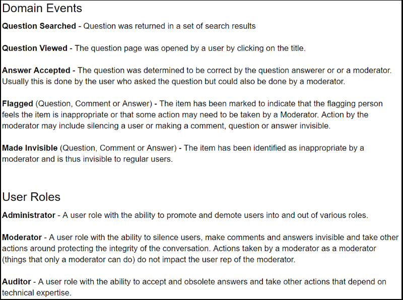
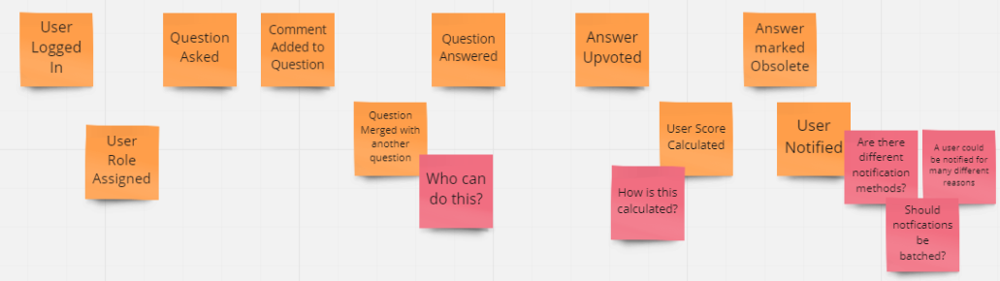
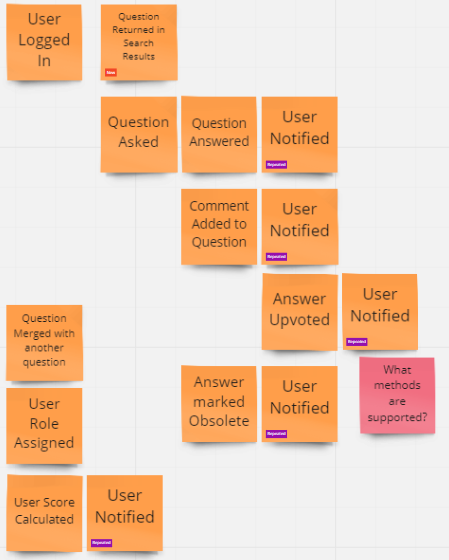
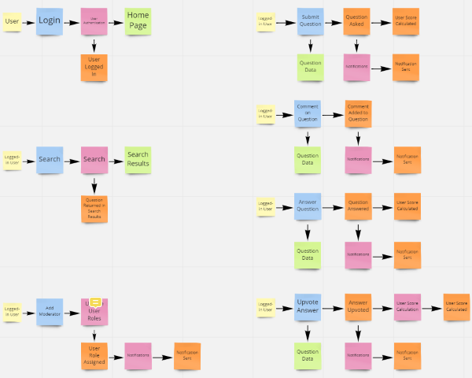
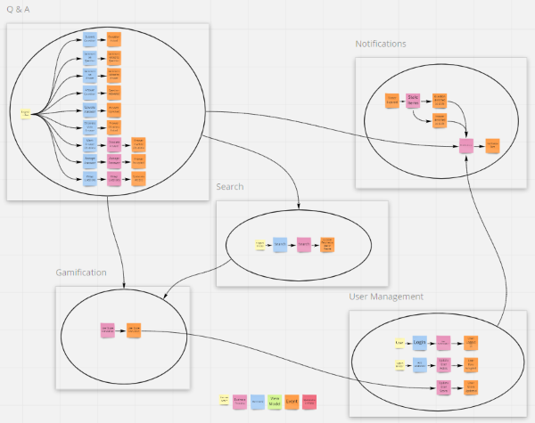
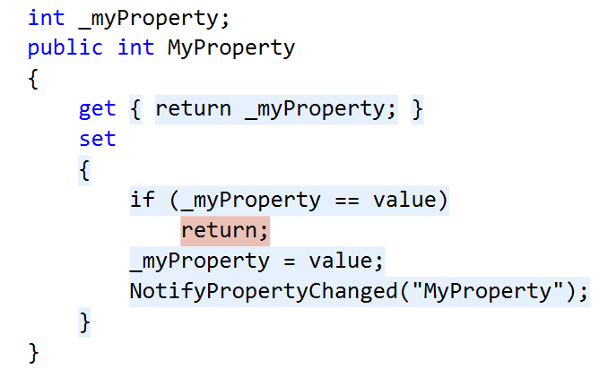

Tag: agile
Critical Questions to Ask Your Team About Microservices
Posted by bsstahl on 2023-01-23 and Filed Under: development
Over the last 6 weeks we have discussed the creation, maintenance and operations of microservices and event-driven systems. We explored different conversations that development teams should have prior to working with these types of architectures. Asking the questions we outlined, and answering as many of them as are appropriate, will help teams determine which architectural patterns are best for them, and assist in building their systems and processes in a reliable and supportable way. These conversations are known as "The Critical C's of Microservices", and each is detailed individually in its own article.
The "Critical C's" are: Context, Consistency, Contract, Chaos, Competencies and Coalescence. For easy reference, I have aggregated all of the key elements of each conversation in this article. For details about why each is important, please consult the article specific to that topic.
There is also a Critical C's of Microservices website that includes the same information as in these articles. This site will be kept up-to-date as the guidance evolves.
Questions about Context
Development teams should have conversations around Context that are primarily focused around the tools and techniques that they intend to use to avoid the Dual-Writes Anti-Pattern. These conversations should include answering questions like:
- What database technologies will we use and how can we leverage these tools to create downstream events based on changes to the database state?
- Which of our services are currently idempotent and which ones could reasonably made so? How can we leverage our idempotent services to improve system reliability?
- Do we have any services right now that contain business processes implemented in a less-reliable way? If so, pulling this functionality out into their own microservices might be a good starting point for decomposition.
- What processes will we as a development team implement to track and manage the technical debt of having business processes implemented in a less-reliable way?
- What processes will we implement to be sure that any future less-reliable implementations of business functionality are made with consideration and understanding of the debt being created and a plan to pay it off.
- What processes will we implement to be sure that any existing or future less-reliable implementations of business functionality are documented, understood by, and prioritized by the business process owners.
Questions about Consistency
Development teams should have conversations around Consistency that are primarily focused around making certain that the system is assumed to be eventually consistency throughout. These conversations should include answering questions like:
- What patterns and tools will we use to create systems that support reliable, eventually consistent operations?
- How will we identify existing areas where higher-levels of consistency have been wedged-in and should be removed?
- How will we prevent future demands for higher-levels of consistency, either explicit or assumed, to creep in to our systems?
- How will we identify when there are unusual or unacceptable delays in the system reaching a consistent state?
- How will we communicate the status of the system and any delays in reaching a consistent state to the relevant stakeholders?
Questions about Contract
Development teams should have conversations around Contract that are primarily focused around creating processes that define any integration contracts for both upstream and downstream services, and serve to defend their internal data representations against any external consumers. These conversations should include answering questions like:
- How will we isolate our internal data representations from those of our downstream consumers?
- What types of compatibility guarantees are our tools and practices capable of providing?
- What procedures should we have in place to monitor incoming and outgoing contracts for compatibility?
- What should our procedures look like for making a change to a stream that has downstream consumers?
- How can we leverage upstream messaging contracts to further reduce the coupling of our systems to our upstream dependencies?
Questions about Chaos
Development teams should have conversations around Chaos that are primarily focused around procedures for identifying and remediating possible failure points in the application. These conversations should include answering questions like:
- How will we evaluate potential sources of failures in our systems before they are built?
- How will we handle the inability to reach a dependency such as a database?
- How will we handle duplicate messages sent from our upstream data sources?
- How will we handle messages sent out-of-order from our upstream data sources?
- How will we expose possible sources of failures during any pre-deployment testing?
- How will we expose possible sources of failures in the production environment before they occur for users?
- How will we identify errors that occur for users within production?
- How will we prioritize changes to the system based on the results of these experiments?
Questions about Competencies
Development teams should have conversations around Competencies that are primarily focused around what systems, sub-systems, and components should be built, which should be installed off-the-shelf, and what libraries or infrastructure capabilities should be utilized. These conversations should include answering questions like:
- What are our core competencies?
- How do we identify "build vs. buy" opportunities?
- How do we make "build vs. buy" decisions on needed systems?
- How do we identify cross-cutting concerns and infrastructure capabilites that can be leveraged?
- How do we determine which libraries or infrastructure components will be utilized?
- How do we manage the versioning of utilized components, especially in regard to security updates?
- How do we document our decisions for later review?
Questions about Coalescence
Development teams should have conversations around Coalescence that are primarily focused around brining critical information about the operation of our systems together for easy access. These conversations should include answering questions like:
- What is our mechanism for deployment and system verification?
- How will we identify, as quickly as possible, when a deployment has had a negative impact on our system?
- Are there tests that can validate the operation of the system end-to-end?
- How will we surface the status of any deployment and system verification tests?
- What is our mechanism for logging/traceability within our system?
- How will we coalesce our logs from the various services within the system?
- How will we know if there are anomalies in our logs?
- Are there additional identifiers we need to add to allow traceability?
- Are there log queries that, if enabled, might provide additional support during an outage?
- Are there ways to increase the level of logging when needed to provide additional information and can this be done wholistically on the system?
- How will we expose SLIs and other metrics so they are available when needed?
- How will we know when there are anomalies in our metrics?
- What are the metrics that would be needed in an outage and how will we surface those for easy access?
- Are there additional metrics that, if enabled, might provide additional support during an outage?
- Are there ways to perform ad-hoc queries against SLIs and metrics to provide additional insight in an outage?
- How will we identify the status of dependencies so we can understand when our systems are reacting to downstream anomalies?
- How will we surface dependency status for easy access during an outage?
- Are there metrics we can surface for our dependencies that might help during an outage?
Tags: agile antipattern apache-kafka api apps architecture aspdotnet ci_cd coding-practices coupling event-driven microservices soa
The Critical C's of Microservices - Coalescence
Posted by bsstahl on 2023-01-16 and Filed Under: development
"The Critical C's of Microservices" are a series of conversations that development teams should have around building event-driven or other microservice based architectures. These topics will help teams determine which architectural patterns are best for them, and assist in building their systems and processes in a reliable and supportable way.
The "Critical C's" are: Context, Consistency, Contract, Chaos, Competencies and Coalescence. Each of these topics has been covered in detail in this series of 6 articles. The first article of the 6 was on the subject of Context. This is the final article in the series, and covers the topic of Coalescence.
Coalescence
The use of Microservices reduces the complexity of our services in many ways, however it also adds complexity when it comes to deployment and operations. More services mean more deployments, even as each of those deployments is smaller and more isolated. Additionally, they can be harder on operations and support teams since there can be many more places to go when you need to find information. Ideally, we would coalesce all of the necessary information to operate and troubleshoot our systems in a single pane-of-glass so that our operations and support engineers don't have to search for information in a crisis.
Deployment and system verification testing can help us identify when there are problems at any point in our system and give us insight into what the problems might be and what caused them. Tests run immediately after any deployment can help identify when a particular deployment has caused a problem so it can be addressed quickly. Likewise, ongoing system verification tests can give early indications of problems irrespective of the cause. Getting information about the results of these tests quickly and easily into the hands of the engineers that can act on them can reduce costs and prevent outages.
Logging and traceability is generally considered a solved problem, so long as it is used effectively. We need to setup our systems to make the best use of our distributed logging systems. This often means adding a correlation identifier alongside various request and causation ids to make it easy to trace requests through the system. We also need to be able to monitor and surface our logs so that unusual activity can be recognized and acted on as quickly as possible.
Service Level Indicators (SLIs) and other metrics can provide key insights into the operations of our systems, even if no unusual activity is seen within our logs. Knowing what operational metrics suggest there might be problems within our systems, and monitoring changes to those metrics for both our services and our dependencies can help identify, troubleshoot and even prevent outages. Surfacing those metrics for easy access can give our support and operations engineers the tools they need to do their jobs effectively.
Goals of the Conversation
Development teams should have conversations around Coalescence that are primarily focused around brining critical information about the operation of our systems together for easy access. These conversations should include answering questions like:
- What is our mechanism for deployment and system verification?
- How will we identify, as quickly as possible, when a deployment has had a negative impact on our system?
- Are there tests that can validate the operation of the system end-to-end?
- How will we surface the status of any deployment and system verification tests?
- What is our mechanism for logging/traceability within our system?
- How will we coalesce our logs from the various services within the system?
- How will we know if there are anomalies in our logs?
- Are there additional identifiers we need to add to allow traceability?
- Are there log queries that, if enabled, might provide additional support during an outage?
- Are there ways to increase the level of logging when needed to provide additional information and can this be done wholistically on the system?
- How will we expose SLIs and other metrics so they are available when needed?
- How will we know when there are anomalies in our metrics?
- What are the metrics that would be needed in an outage and how will we surface those for easy access?
- Are there additional metrics that, if enabled, might provide additional support during an outage?
- Are there ways to perform ad-hoc queries against SLIs and metrics to provide additional insight in an outage?
- How will we identify the status of dependencies so we can understand when our systems are reacting to downstream anomalies?
- How will we surface dependency status for easy access during an outage?
- Are there metrics we can surface for our dependencies that might help during an outage?
Tags: agile antipattern apache-kafka api apps architecture aspdotnet ci_cd coding-practices coupling event-driven microservices soa
The Critical C's of Microservices - Competencies
Posted by bsstahl on 2023-01-09 and Filed Under: development
"The Critical C's of Microservices" are a series of conversations that development teams should have around building event-driven or other microservice based architectures. These topics will help teams determine which architectural patterns are best for them, and assist in building their systems and processes in a reliable and supportable way.
The "Critical C's" are: Context, Consistency, Contract, Chaos, Competencies and Coalescence. Each of these topics will be covered in detail in this series of articles. The first article of the 6 was on the subject of Context. This is article 5 of the series, and covers the topic of Competencies.
Competencies
It is our responsibility as engineers to spend our limited resources on those things that give the companies we are building for a competitive advantage in the market. This means limiting our software builds to areas where we can differentiate that company from others. Not every situation requires us to build a custom solution, and even when we do, there is usually no need for us to build every component of that system.
If the problem we are solving is a common one that many companies deal with, and our solution does not give us a competitive advantage over those other companies, we are probably better off using an off-the-shelf product, whether that is a commercial (COTS) product, or a Free or Open-Source one (FOSS). Software we build should be unique to the company it is being built for, and provide that company with a competitive advantage. There is no need for us to build another Customer Relationship Manager (CRM) or Accounting system since these systems implement solutions to solved problemns that are generally solved in the same way by everyone. We should only build custom solutions if we are doing something that has never been done before or we need to do things in a way that is different from everyone else and can't be done using off-the-shelf systems.
We should also only be building custom software when the problem being solved is part of our company's core competencies. If we are doing this work for a company that builds widgets, it is unlikely, though not impossible, that building a custom solution for getting parts needed to build the widgets will provide that company with a competitive advantage. We are probably better off if we focus our efforts on software to help make the widgets in ways that are better, faster or cheaper.
If our "build vs. buy" decision is to build a custom solution, there are likely to be opportunities within those systems to use pre-existing capabilities rather than writing everything from scratch. For example, many cross-cutting concerns within our applications have libraries that support them very effectively. We should not be coding our own implementations for things like logging, configuration and security. Likewise, there are many capabilities that already exist in our infrastructure that we should take advantage of. Encryption, which is often a capability of the operating system, is one that springs to mind. We should certainly never "roll-our-own" for more complex infrastructure features like Replication or Change Data Capture, but might even want to consider avoiding rebuilding infrastructure capabilities that we more commonly build. An example of this might be if we would typically build a Web API for our systems, we might consider exposing the API's of our backing infrastructure components instead, properly isolated and secured of course, perhaps via an API Management component.
Goals of the Conversation
Development teams should have conversations around Competencies that are primarily focused around what systems, sub-systems, and components should be built, which should be installed off-the-shelf, and what libraries or infrastructure capabilities should be utilized. These conversations should include answering questions like:
- What are our core competencies?
- How do we identify "build vs. buy" opportunities?
- How do we make "build vs. buy" decisions on needed systems?
- How do we identify cross-cutting concerns and infrastructure capabilites that can be leveraged?
- How do we determine which libraries or infrastructure components will be utilized?
- How do we manage the versioning of utilized components, especially in regard to security updates?
- How do we document our decisions for later review?
Next Up - Coalescence
In the final article of this series we will look at Coalescence and how we should work to bring all of the data together for our operations & support engineers.
Tags: agile antipattern apache-kafka api apps architecture aspdotnet ci_cd coding-practices coupling event-driven microservices soa
The Critical C's of Microservices - Chaos
Posted by bsstahl on 2023-01-02 and Filed Under: development
"The Critical C's of Microservices" are a series of conversations that development teams should have around building event-driven or other microservice based architectures. These topics will help teams determine which architectural patterns are best for them, and assist in building their systems and processes in a reliable and supportable way.
The "Critical C's" are: Context, Consistency, Contract, Chaos, Competencies and Coalescence. Each of these topics will be covered in detail in this series of articles. The first article of the 6 was on the subject of Context. This is article 4 of the series, and covers the topic of Chaos.
Chaos
One of the Fallacies of Distributed Computing is that the network is reliable. We should have similarly low expectations for the reliability of all of the infrastructure on which our services depend. Networks will segment, commodity servers and drives will fail, containers and operating systems will become unstable. In other words, our software will have errors during operation, no matter how resilient we attempt to make it. We need to embrace the fact that failures will occur in our software, and will do so at random times and often in unpredictable ways.
If we are to build systems that don't require our constant attention, especially during off-hours, we need to be able to identify what happens when failures occur, and design our systems in ways that will allow them to heal automatically once the problem is corrected.
To start this process, I recommend playing "what-if" games using diagrams of the system. Walk through the components of the system, and how the data flows through it, identifying each place where a failure could occur. Then, in each area where failures could happen, attempt to define the possible failure modes and explore what the impact of those failures might be. This kind of "virtual" Chaos Engineering is certainly no substitute for actual experimentation and testing, but is a good starting point for more in-depth analysis. It also can be very valuable in helping to understand the system and to produce more hardened services in the future.
Thought experiments are useful, but you cannot really know how a system will respond to different types of failures until you have those failures in production. Historically, such "tests" have occurred at random, at the whim of the infrastructure, and usually at the worst possible time. Instead of leaving these things to chance, tools like Chaos Monkey can be used to simulate failures in production, and can be configured to create these failures during times where the appropriate support engineers are available and ready to respond if necessary. This way, we can see if our systems respond as we expect, and more importantly, heal themselves as we expect.
Even if you're not ready to jump into using automated experimentation tools in production just yet, a lot can be learned from using feature-flags and changing service behaviors in a more controlled manner as a starting point. This might involve a flag that can be set to cause an API method to return an error response, either as a hard failure, or during random requests for a period of time. Perhaps a switch could be set to stop a service from picking-up asynchronous messages from a queue or topic. Of course, these flags can only be placed in code we control, so we can't test failures of dependencies like databases and other infrastructure components in this way. For that, we'll need more involved testing methods.
Regardless of how we test our systems, it is important that we do everything we can to build systems that will heal themselves without the need for us to intervene every time a failure occurs. As a result, I highly recommend using asynchronous messaging patterns whenever possible. The asynchrony of these tools allow our services to be "temporally decoupled" from their dependencies. As a result, if a container fails and is restarted by Kubernetes, any message in process is rolled-back onto the queue or topic, and the system can pick right up where it left off.
Goals of the Conversation
Development teams should have conversations around Chaos that are primarily focused around procedures for identifying and remediating possible failure points in the application. These conversations should include answering questions like:
- How will we evaluate potential sources of failures in our systems before they are built?
- How will we handle the inability to reach a dependency such as a database?
- How will we handle duplicate messages sent from our upstream data sources?
- How will we handle messages sent out-of-order from our upstream data sources?
- How will we expose possible sources of failures during any pre-deployment testing?
- How will we expose possible sources of failures in the production environment before they occur for users?
- How will we identify errors that occur for users within production?
- How will we prioritize changes to the system based on the results of these experiments?
Next Up - Competencies
In the next article of this series we will look at Competencies and how we should focus at least as much on what we build as how we build it.
Tags: agile antipattern apache-kafka api apps architecture aspdotnet ci_cd coding-practices coupling event-driven microservices soa
The Critical C's of Microservices - Contract
Posted by bsstahl on 2022-12-26 and Filed Under: development
"The Critical C's of Microservices" are a series of conversations that development teams should have around building event-driven or other microservice based architectures. These topics will help teams determine which architectural patterns are best for them, and assist in building their systems and processes in a reliable and supportable way.
The "Critical C's" are: Context, Consistency, Contract, Chaos, Competencies and Coalescence. Each of these topics will be covered in detail in this series of articles. The first article of the 6 was on the subject of Context. This is article 3 of the series, and covers the topic of Contract.
Contract
Once a message has been defined and agreed to as an integration mechanism, all stakeholders in that integration have legitimate expectations of that message contract. Primarily, these expectations includes the agreed-to level of compatibility of future messages, and what the process will be when the contract needs to change. These guarantees will often be such that messages can add fields as needed, but cannot remove, move, or change the nature of existing fields without significant coordination with the stakeholders. This can have a severe impact on the agility of our dev teams as they try to move fast and iterate with their designs.
In order to keep implementations flexible, there should be an isolation layer between the internal representation (Domain Model) of any message, and the more public representation (Integration Model). This way, the developers can change the internal representation with only limited restrictions, so long as as the message remains transformationally compatible with the integration message, and the transformation is modified as needed so that no change is seen by the integration consumers. The two representations may take different forms, such as one in a database, the other in a Kafka topic. The important thing is that the developers can iterate quickly on the internal representation when they need to.

The Eventually Consistent example from the earlier Consistency topic (included above) shows such an isolation layer since the WorkOrders DB holds the internal representation of the message, the Kafka Connect connector is the abstraction that performs the transformation as needed, and the topic that the connector produces data to is the integration path. In this model, the development team can iterate on the model inside the DB without necessarily needing to make changes to the more public Kafka topic.
We need to take great care to defend these internal streams and keep them isolated. Ideally, only 1 service should ever write to our domain model, and only internal services, owned by the same small development team, should read from it. As soon as we allow other teams into our domain model, it becomes an integration model whether we want it to be or not. Even other internal services should use the public representation if it is reasonable to do so.
Similarly, our services should make proper use of upstream integration models. We need to understand what level of compatibility we can expect and how we will be notified of changes. We should use these data paths as much as possible to bring external data locally to our services, in exactly the form that our service needs it in, so that each of our services can own its own data for both reliability and efficiency. Of course, these local stores must be read-only. We need to publish change requests back to the System of Record to make any changes to data sourced by those systems.
We should also do everything we can to avoid making assumptions about data we don't own. Assuming a data type, particular provenance, or embedded-intelligence of a particular upstream data field will often cause problems in the future because we have created unnecessary coupling. As an example, it is good practice to treat all foreign identifiers as strings, even if they look like integers, and to never make assumptions along the lines of "...those identifiers will always be increasing in value". While these may be safe assumptions for a while, they should be avoided if they reasonably can be to prevent future problems.
Goals of the Conversation
Development teams should have conversations around Contract that are primarily focused around creating processes that define any integration contracts for both upstream and downstream services, and serve to defend their internal data representations against any external consumers. These conversations should include answering questions like:
- How will we isolate our internal data representations from those of our downstream consumers?
- What types of compatibility guarantees are our tools and practices capable of providing?
- What procedures should we have in place to monitor incoming and outgoing contracts for compatibility?
- What should our procedures look like for making a change to a stream that has downstream consumers?
- How can we leverage upstream messaging contracts to further reduce the coupling of our systems to our upstream dependencies?
Next Up - Chaos
In the next article of this series we will look at Chaos and how we can use both thought and physical experiments to help improve our system's reliability.
Tags: agile antipattern apache-kafka api apps architecture aspdotnet ci_cd coding-practices coupling event-driven microservices soa
The Critical C's of Microservices - Consistency
Posted by bsstahl on 2022-12-19 and Filed Under: development
"The Critical C's of Microservices" are a series of conversations that development teams should have around building event-driven or other microservice based architectures. These topics will help teams determine which architectural patterns are best for them, and assist in building their systems and processes in a reliable and supportable way.
The "Critical C's" are: Context, Consistency, Contract, Chaos, Competencies and Coalescence. Each of these topics will be covered in detail in this series of articles. Article 1 of the 6 was on the subject of Context. This is article 2 of the series, and covers the topic of Consistency.
Consistency
The world is eventually consistent. The sooner we get that through our heads and start expecting our systems to act like it, the fewer problems, we will have. In fact, I'll go out on a limb and say that most of the problems in building and maintaining microservice architectures are the result of failing to fully embrace eventual consistency from the start.
Data is consistent when it appears the same way when viewed from multiple perspectives. Our systems are said to be consistent when all of the data them is consistent. A system with strong consistency guarantees would be one where every actor, anywhere in the context of the application, would see the exact same value for any data element at any given time. A system that is eventually consistent is one with strong guarantees that the data will reach all intended targets, but much weaker guarantees about how long it might take to achieve data consistency.
Full consistency is impossible in a world where there is a finite speed of causation. Strong consistency can only be achieved when every portion of the application waits until the data is fully consistent before processing. This is generally quite difficult unless all of the data is housed in a single, ACID compliant data store, which of course, is a very bad idea when building scalable systems. Strong consistency, or anything more stringent than eventual consistency, may be appropriate under very specific circumstances when data stores are being geo-replicated (assuming the database server is designed for such a thing), but can cause real difficulties, especially in the areas of reliability and scalability, when attempted inside an application.
We should challenge demands for higher levels of consistency with rigor. Attempts to provide stronger consistency guarantees than eventual will cause far more problems than they are worth.
We will always need to look for situations where consistency problems might occur (i.e. race-conditions), expect them to happen, and try to design our systems in such a way as to not need to worry about them. Race conditions and other consistency problems are smells. If you are in a situation where you are might see these types of problems, it may indicate that you need to reevaluate the details of your implementation.
As an example, let's take a look at the 3 implementation diagrams below. In all 3 of these implementations, the goal is to have the WorkOrder service modify a WorkOrder and have the changes published onto a topic for downstream consumers. If a WorkOrder already exists, it needs to be loaded from the data store so that appropriate updates can be made. As you will see, the 3 implementations have very different reliability characteristics.

Implementation 1 - Dual-Write: In the 1st example, the WorkOrder service attempts to both update the entity in the database, and publish the changes to the topic for downstream consumers. This is probably an attempt to keep both the event and the update consistent with one another, and is often mistaken for the simplest solution. However, since it is impossible to make more than 1 reliable change at a time, the only way this implementation can guarantee reliability is if the 1st update is done in an idempotent way. If that is the case, in the circumstances where the 2nd update fails, the service can roll the command message back onto the original topic and try the entire change again. Notice however that this doesn't guarantee consistency at all. If the DB is updated first, it may be done well before the publication ever occurs, since a retry would end up causing the publication to occur on a later attempt. Attempting to be clever and use a DB transaction to maintain consistency actually makes the problem worse for reasons that are outside of the scope of this discussion. Only a distributed transaction across the database and topic would accomplish that, and would do so at the expense of system scalability.
Implementation 2 - Race Condition: In the 2nd example, the WorkOrder service reads data from the DB, and uses that to publish any needed updates to the topic. The topic is then used to feed the database, as well as any additional downstream consumers. While it might seem like the race-condition would be obvious here, it is not uncommon to miss this kind of systemic problem in a more complicated environment. It also can be tempting to build the system this way if the original implementation did not involve the DB. If we are adding the data store, we need to make sure data access happens prior to creating downstream events to avoid this kind of race condition. Stay vigilant for these types of scenarios and be willing to make the changes needed to protect the reliability of your system when requirements change.
Implementation 3 - Eventually Consistent: In the 3rd example, the DB is used directly by both the WorkOrder service, and as the source of changes to the topic. This scenario is reliable but only eventually consistent. That is, we know that both the DB and the topic will be updated since the WorkOrder service makes the DB update directly, and the reliable change feed from the DB instantiates a new execution context for the topic to be updated. This way, there is only a single change to system state made within each execution context, and we can know that they will happen reliably.
Another example of a consistency smell might be when end-users insist that their UI should not return after they update something in an app, until the data is guaranteed to be consistent. I don't blame users for making these requests. After all, we trained them that the way to be sure that a system is reliable is to hit refresh until they see the data. In this situation, assuming we can't talk the users out of it, our best path is to make the UI wait until our polling, or a notification mechanism, identifies that the data is now consistent. I think this is a pretty rude thing to do to our users, but if they insist on it, I can only advise them against it. I will not destroy the scalability of systems I design, and add complexity to these systems that the developers will need to maintain forever, by simulating consistency deeper inside the app. The internals of the application should be considered eventually consistent at all times and we need to get used to thinking about our systems in this way.
Goals of the Conversation
Development teams should have conversations around Consistency that are primarily focused around making certain that the system is assumed to be eventually consistency throughout. These conversations should include answering questions like:
- What patterns and tools will we use to create systems that support reliable, eventually consistent operations?
- How will we identify existing areas where higher-levels of consistency have been wedged-in and should be removed?
- How will we prevent future demands for higher-levels of consistency, either explicit or assumed, to creep in to our systems?
- How will we identify when there are unusual or unacceptable delays in the system reaching a consistent state?
- How will we communicate the status of the system and any delays in reaching a consistent state to the relevant stakeholders?
Next Up - Contract
In the next article of this series we will look at Contract and how we can leverage contracts to make our systems more reliable while still maintaining our agility.
Tags: agile antipattern apache-kafka api apps architecture aspdotnet ci_cd coding-practices coupling event-driven microservices soa
The Critical C's of Microservices - Context
Posted by bsstahl on 2022-12-12 and Filed Under: development
"The Critical C's of Microservices" are a series of conversations that development teams should have around building event-driven or other microservice based architectures. These topics will help teams determine which architectural patterns are best for them, and assist in building their systems and processes in a reliable and supportable way.
The "Critical C's" are: Context, Consistency, Contract, Chaos, Competencies and Coalescence. Each of these topics will be covered in detail in this series of articles, starting with Context.
Update: Part 2 of this series, Consistency is now available.
Context
The Execution Context
The execution context is the unit of work of all services. It represents the life-cycle of a single request, regardless of the details of how that request was received. So, whether an HTTP web request, or an asynchronous message from Apache Kafka or Azure Service Bus, the context we care about here is that of a single service processing that one message. Since, for reasons that will be discussed in a future article, there is no way to reliably make more than one change to system state within a single execution context, we must defend this context from the tendency to add additional state changes which would damage the reliability of our services.
There are generally only two situations where it is ok to make more than one change to system state in a single execution context:
When the first change is idempotent so we can rollback the message and try again later without bad things happening due to duplication. An example of this is a database Upsert where all of the data, including keys, is supplied. In this case, the 1st time we execute the request, we might insert the record in the DB. If a later change fails in the same context and we end up receiving the same message a 2nd time, the resulting update using the same data will leave the system in the same state as if the request was only executed once. Since this idempotent operation can be executed as many times as necessary without impacting the ultimate state of the system, we can make other changes after this one and still rollback and retry the request if a subsequent operation fails, without damaging the system. Services that are idempotent are much easier to orchestrate reliably, so much so that idempotence is considered a highly-desireable feature of microservices.
When the second change is understood to be less-reliable. An example of this is logging. We don't want to fail a business-process due to failures in logging, so we accept that our logging, and certain other technical processes, may be less-reliable than our business processes. It is rarely ok for a business process to be less-reliable in this way. Implementations that make certain business features less-reliable should be identified, documented, and discussed with an eye toward repaying what is likely to be technical debt.
Avoiding Dual-Writes
Ultimately, to maintain the reliability of our systems, we must be sure we are never trying to make more than one reliable change to system state in a single execution context. This is a very different way of thinking than most developers are used to. In fact, I would say it is the opposite of how many of us have been taught to think about these types of problems. Developers value simplicity, and rightfully so. Unfortunately, problems where we already have a service running that can host logic we need to add, make it seem like the simplest solution is to just "add-on" the new logic to the existing code. The truth of the matter is far different. Let's look at an example:

In these drawings we start with a RESTful service that updates a database and returns an appropriate response. This service makes only 1 change to system state so it can be built reliably.
The next two drawings show ways of implementing a new requirement for the system to update a downstream dependency, say a Kafka topic, in addition to the database update. The default for many Technologists would be to just to add-on inside the service. That is, they might suggest that we should have the service update both the database and the topic as shown in the second drawing. This would be an example of the Dual-Writes Anti-Pattern and would hurt both system reliability and supportability.
Instead, the simplest solution that doesn't harm our system's reliability is actually to trigger the downstream action off of the DB update. That is, we can use the Outbox Pattern or if the database supports it, Change Data Capture or a Change Feed to trigger a secondary process that produces the event message. Adding a deployment unit like this might make it feel like a more complicated solution, however it actually reduces the complexity of the initial service, avoids making a change to a working service, and will avoid creating reliability problems by not performing dual-writes.
There are a few things to note here regarding atomic database transactions. An ACID-compliant update to a database represents a single change to system state. If we could make fully ACID-compliant changes across multiple data stores, or other boundaries like web services, the Dual-Writes Anti-Pattern would be much less of a problem. Unfortunately, distributed transactions cannot be used without severely impacting both scalability and performance and are not recommended. It should also be noted that, when talking about only 2 state changes, some threats to reliability may be reduced by being clever with our use of transactions. However, these tricks help us far less than one might think, and have severely diminishing returns when 3 or more state-changes are in-scope. Transactions, while good for keeping local data consistent, are not good for maintaining system reliability and are horrible for system scalability.
Goals of the Conversation
Development teams should have conversations around Context that are primarily focused around the tools and techniques that they intend to use to avoid the Dual-Writes Anti-Pattern. These conversations should include answering questions like:
What database technologies will we use and how can we leverage these tools to create downstream events based on changes to the database state?
Which of our services are currently idempotent and which ones could reasonably made so? How can we leverage our idempotent services to improve system reliability?
Do we have any services right now that contain business processes implemented in a less-reliable way? If so, pulling this functionality out into their own microservices might be a good starting point for decomposition.
What processes will we as a development team implement to track and manage the technical debt of having business processes implemented in a less-reliable way?
What processes will we implement to be sure that any future less-reliable implementations of business functionality are made with consideration and understanding of the debt being created and a plan to pay it off.
What processes will we implement to be sure that any existing or future less-reliable implementations of business functionality are documented, understood by, and prioritized by the business process owners.
Next Up - Consistency
In the next article of this series we will look at Consistency, and see how Eventual Consistency represents the reality of the world we live in.
Tags: agile antipattern apache-kafka api apps architecture aspdotnet ci_cd coding-practices coupling event-driven microservices soa
Identifying the Extraneous Publishing AntiPattern
Posted by bsstahl on 2022-08-08 and Filed Under: development
What do you do when a dependency of one of your components needs data, ostensibly from your component, that your component doesn't actually need itself?
Let's think about an example. Suppose our problem domain (the big black box in the drawings below) uses some data from 3 different data sources (labeled Source A, B & C in the drawings). There is also a downstream dependency that needs data from the problem domain, as well as from sources B & C. Some of the data required by the downstream dependency are not needed by, or owned by, the problem domain.
There are 2 common implementations discussed now, and 1 slightly less obvious one discussed later in this article. We could:
- Pass-through the needed values on the output from our problem domain. This is the default option in many environments.
- Force the downstream to take additional dependencies on sources B & C
Note: In the worst of these cases, the data from one or more of these sources is not needed at all in the problem domain.
Option 1 - Increase Stamp Coupling
The most common choice is for the problem domain to publish all data that it is system of record for, as well as passing-through data needed by the downstream dependencies from the other sources. Since we know that a dependency needs the data, we simply provide it as part of the output of the problem domain system.

Option 1 Advantages
- The downstream systems only needs to take a dependency on a single data source.
Option 1 Disadvantages
- Violates the Single Responsibility Principle because the problem domain may need to change for reasons the system doesn't care about. This can occur if a upstream producer adds or changes data, or a downstream consumer needs additional or changed data.
- The problem domain becomes the de-facto system of record for data it doesn't own. This may cause downstream consumers to be blocked by changes important to the consumers but not the problem domain. It also means that the provenance of the data is obscured from the consumer.
- Problems incurred by upstream data sources are exposed in the problem domain rather than in the dependent systems, irrespective of where the problem occurs or whether that problem actually impacts the problem domain. That is, the owners of the system in the problem domain become the "one neck to wring" for problems with the data, regardless of whether the problem is theirs, or they even care about that data.
I refer to this option as an implementation of the Extraneous Publishing Antipattern (Thanks to John Nusz for the naming suggestion). When this antipattern is used it will eventually cause significant problems for both the problem domain and its consumers as they evolve independently and the needs of each system change. The problem domain will be stuck with both their own requirements, and the requirements of their dependencies. The dependent systems meanwhile will be stuck waiting for changes in the upstream data provider. These changes will have no priority in that system because the changes are not needed in that domain and are not cared about by that product's ownership.
The relationship between two components created by a shared data contract is known as stamp coupling. Like any form of coupling, we should attempt to minimize it as much as possible between components so that we don't create hard dependencies that reduce our agility.
Option 2 - Multiplicative Dependencies
This option requires each downstream system to take a dependency on every system of record whose data it needs, regardless of what upstream data systems may already be utilizing that data source.

Option 2 Advantages
- Each system publishes only that information for which it is system of record, along with any necessary identifiers.
- Each dependency gets its data directly from the system of record without concern for intermediate actors.
Option 2 Disadvantages
- A combinatorial explosion of dependencies is possible since each system has to take dependencies on every system it needs data from. In some cases, this means that the primary systems will have a huge number of dependencies.
While there is nothing inherently wrong with having a large number of repeated dependencies within the broader system, it can still cause difficulties in managing the various products when the dependency graph starts to get unwieldy. We've seen similar problems in package-management and other dependency models before. However, there is a more common problem when we prematurely optimize our systems. If we optimize prematurely, we can create artifacts that we need to support forever, that create unnecessary complexity. As a result, I tend to use option 2 until the number of dependencies starts to grow. At that point, when the dependency graph starts to get out of control, we should look for another alternative.
Option 3 - Shared Aggregation Feed
Fortunately, there is a third option that may not be immediately apparent. We can get the best of both worlds, and limit the impact of the disadvantages described above, by moving the aggregation of the data to a separate system. In fact, depending on the technologies used, this aggregation may be able to be done using an infrastructure component that is a low-code solution less likely to have reliability concerns.
In this option, each system publishes only the data for which it is system of record, as in option 1 above. However, instead of every system having to take a direct dependency on all of the upstream systems, a separate component is used to create a shared feed that represents the aggregation of the data from all of the sources.

Option 3 Advantages
- Each system publishes only that information for which it is system of record, along with any necessary identifiers.
- The downstream systems only needs to take a dependency on a single data source.
- A shared ownership can be arranged for the aggregation source that does not put the burden entirely on a single domain team.
Option 3 Disadvantages
- The aggregation becomes the de-facto system of record for data it doesn't own, though that fact is anticipated and hopefully planned for. The ownership of this aggregation needs to be well-defined, potentially even shared among the teams that provide data for the aggregation. This still means though that the provenance of the data is obscured from the consumer.
- Problems incurred by upstream data sources are exposed in the aggregator rather than in the dependent systems, irrespective of where the problem occurs. That is, the owners of the aggregation system become the "one neck to wring" for problems with the data. However, as described above, that ownership can be shared among the teams that own the data sources.
It should be noted that in any case, regardless of implementation, a mechanism for correlating data across the feeds will be required. That is, the entity being described will need either a common identifier, or a way to translate the identifiers from one system to the others so that the system can match the data for the same entities appropriately.
You'll notice that the aggregation system described in this option suffers from some of the same disadvantages as the other two options. The biggest difference however is that the sole purpose of this tool is to provide this aggregation. As a result, we handle all of these drawbacks in a domain that is entirely built for this purpose. Our business services remain focused on our business problems, and we create a special domain for the purpose of this data aggregation, with development processes that serve that purpose. In other words, we avoid expanding the definition of our problem domain to include the data aggregation as well. By maintaining each component's single responsibility in this way, we have the best chance of remaining agile, and not losing velocity due to extraneous concerns like unnecessary data dependencies.
Implementation
There are a number of ways we can perform the aggregation described in option 3. Certain databases such as MongoDb and CosmosDb provide mechanisms that can be used to aggregate multiple data elements. There are also streaming data implementations which include tools for joining multiple streams, such as Apache Kafka's kSQL. In future articles, I will explore some of these methods for minimizing stamp coupling and avoiding the Extraneous Publishing AntiPattern.
Tags: agile antipattern apache-kafka coding-practices coupling data-structures database development ksql microservices
Event Storming
Posted by bsstahl on 2021-09-21 and Filed Under: development
What is Event Storming?
Event storming is a process for building a model of a problem domain by analyzing the domain from a business perspective. The results of an Event Storming session include a logical model of the domain, as seen by the business owners, that is extremely useful to engineers in defining software systems for that domain. Event Storming follows a four-step process to produce a model of the system that is based on Domain Events, historical facts about the business process that are relevant to the business owners.
The process occurs on a whiteboard surface, ideally in-person but often virtually. Sticky-notes of various colors are used to represent elements of the domain and the model is built-up by everyone on the team, regardless of their role. The exercise starts as a brainstorming session of a sort, then evolves until it results in a model of the business process.
The Goals of Event Storming
Produce a model of the domain that is valuable to both the business owners and the engineers who are building software systems for that domain.
Document a Ubiquitous Language for the domain that represents the shared set of terms used by everyone working in that domain.
Level everyone in the domain on the same understanding of what problems are being solved so that all players have a strong working background.
Important Terminology
Note: The items below represent the different elements of the model we wish to produce. Each type of item is represented by a different color of sticky-note on our design surface. Terms not color-coded exist in the context of Domain Driven Design and may be used during the session, but will not be modeled on the board.
Aggregate
An aggregate is a cluster of domain objects that can be treated as a single unit. An example may be an order and its line-items. These objects will likely be created from distinct classes when built within the context of a software system, but it is useful to treat them as a single aggregate for the purposes of modeling the domain. That is, it is simpler to think about an Order with all of its line-items as a single unit within the model. Additionally, some objects will be able to be viewed from multiple perspectives. If we model a User which contains a collection of Roles, we could also see a Role as having a collection of users. The User and Role objects are each separate aggregates and can be modeled separately depending on the context, even though they represent the same relationship and a collection of one object likely exists on the other. The primary object within each Aggregate is known as the Aggregate Root which is used to describe the aggregate as a whole.
Bounded Context
A Bounded Context is a logical area within a system where business processes are implemented, a ubiquitous language is applied, and certain terms make very clear and specific sense. A term can have exactly one meaning within a bounded context, a meaning which may not be exactly the same as that same term in another bounded context. As an example, let's look at a Customer object. Bounded Contexts that exist in a state after a user has logged-in to the system might have a User object or UserId property associated with it. Meanwhile, this User object or UserId may not exist in a Bounded Context that exists purely pre-login, or where login status has no bearing on the functionality.
Business Process (dark purple stickies)
The business rules and logic required to handle a Command or a Domain Event. A business process may create one or more domain events, or may reject the command outright.
Command (light blue stickies)
An instruction submitted by a user, usually through a view, that typically results in the creation of one or more Domain Events. Commands may be rejected by the Business Processes that handle them, perhaps due to permissions or data validation issues. If a command is rejected, it may or may not result in one or more domain events representing the submission and/or rejection of that command.
Domain Event (orange stickies)
Domain Events are the keys to Event Storming. A Domain Event is something that happened in the domain that is relevant to the business. Events are always written in the past tense since they represent historical facts that cannot change. Examples of domain events include “vehicle locked” and “delivery scheduled.” Though the term event is somewhat overloaded, these Domain Events should not be conflated with the messages that can be used to represent them. While many Domain Events will eventually be represented by event messages of some form, many will not. Event Storming is an implementation agnostic process, thus there is no prescription as to how events are communicated. Domain events, in this context, exist entirely as historical facts and nothing more.
External System (light purple stickies)
A third-party service provider such as a payment gateway or shipping company. These services may utilize View Models within our system and may create Domain Events that trigger Business Processes.
Questions or Risks (pink or red stickies)
We use pink stickies to identify items that are unclear, overly complex or have unanswered questions or risks. Callout concerns with these pink stickies liberally whenever there is something that should be known about an item or area of the model. Sections of the model where there are a lot of pink sticky notes may require additional attention.
Ubiquitous Language
A set of terms describing the domain that are meaningful to the business team. These are the terms that are used by all domain team members to identify and communicate about activities of the system. A sample excerpted from a Ubiquitous Language document is shown below.

User/Actor (yellow stickies)
A person who interacts with the system. These interactions will usually take the form of executing a Command, typically through a view populated by a View Model.
View / Read Model (light green stickies)
A presentation of data that Users, Business Processes, and External Systems interact with to carry out a task in the system. As an example, an external system may call a REST service within the domain that returns data that we represent with a View Model.
The Event Storming Process
Each step builds on the previous steps to result in a cohesive picture of the domain from a business perspective. This view of the system has proven to be extremely useful to engineers in defining software systems for that domain.
1 - Collect Domain Events
The first step in Event Storming is to brainstorm the Domain Events that occur during the course of the business process. These events should be described on orange sticky notes using verbs in the past-tense. Each sticky should represent a single event and should be placed on the modeling surface in roughly chronological order. Since this is brainstorming, we should limit the amount of time we spend discussing and refining each event. There will be more time for that in step 2. However, we do want to have enough discussion to trigger thoughts on additional events which often result from these conversations.
Any events where there are unresolved questions or concerns should be marked with a pink sticky note indicating the question or risk. In this first step we should make liberal use of these stickies.

2 - Refine Domain Events
Once we have thrown all of the events we can think of on the board, we can start to refine those events. In step 1 we were brainstorming so multiple side-conversations may have been occurring at various times. In step 2 we want to bring the entire team together in a single conversation about each event. This is where we drill-in to the details of the events, and modify our model as appropriate.
We begin by walking through the timeline, usually from left to right, but jumping around as needed to best navigate the domain. Each event should be discussed with all participants to be certain that the entire team understands the details of the event. Other things to discuss include whether or not the event is in the proper place on the timeline, if there are any additional events that may be related to the one being discussed, if any duplicate events should be combined, if any of the questions or risks identified in the pink stickies can be resolved, and if there are additional questions or concerns that should be called-out using pink stickies.
Finally, for each event, be certain that any important terms are documented in the Ubiquitous Language document and that we are not using synonyms of the documented terms to describe our events. We always want to use the correct terminology to describe all aspects of our domain.

3 - Track Causes
In step 3, things start to get really interesting. The goal of this step is to determine the causes of each of the Domain Events. There are three causes of domain events: User actions, Business Processes, and External Systems. For each event we need to identify the interactions surrounding it, including what triggers it, and what downstream events it may cause. This step, once completed, results in a model that looks like a series of flows.
User Actions
Users typically trigger events via View Models and Commands. A view model may be displayed to the user from which they issue a command to take an action. This command may directly result in a Domain Event, but is more likely to be consumed by a Business Process which may validate the command before either rejecting it or executing logic that results in a Domain Event.
Business Processes
Business Processes often produce one or more events during the execution of their logic. An example might be that when a question is answered by a user in a StackOverflow type Q & A domain, it results in a “Question Answered” event. This event may be consumed by a business process to notify subscribed users resulting in one or more “User Notified” events. Business Processes often make use of Read Models to provide additional information as to the state of the system.
External Systems
External Systems are business processes that exist outside of the domain, and as such, have a smaller surface with which to interact with our systems. These processes may utilize Read Models from within our domain to gather information and are usually modeled as creating Domain Events to interact with the system. These interactions are typically modeled as Domain Events because most external system events are seen as important historical facts to our business. After all, if they weren’t important to our business domain experts, why would our systems care about them at all? This is not a hard and fast rule however and your domain may differ. It is conceivable that external logic could issue Commands to internal systems, though it seems more reasonable that those would be viewed as Domain Events.

4 - Aggregation (Software Modeling)
The final step is all about grouping our new logic flows around the Aggregates they act upon and describing the communications between these newly identified sub-domains.
As you recall, an Aggregate is an object graph treated as a single object and identified by the Aggregate Root. In this step we identify the aggregates in our system, and then group each of the flows from step 3 by the Aggregate they act upon. At the same time, we can draw lines between the groups to identify the communications across these boundaries. This will result in the final model of this process, a set of flows grouped by their Aggregate into subdomains that can often be viewed as a good proxy for a microservice.

Additional Resources
- Intro to Event Storming - Lightning Talk Video
- Event Storming Presentation - Slide Deck
- Alberto Brandolini - Creator of Event Storming - On Why it Should be Done In-Person
- Adam Dymitruk on Event Modeling - a similar (more expansive) system
Conclusion
The practice of Event Storming offers a dynamic and inclusive approach to understanding and modeling business domains, bridging the gap between technical and non-technical stakeholders. By fostering collaboration, promoting a shared language, and visualizing the flow of Domain Events, teams can unlock a deeper comprehension of the business processes at hand. This method not only streamlines the development process but also ensures that the resulting software systems are precisely aligned with business objectives. As we've seen, Event Storming stands out as an invaluable tool in the arsenal of modern software development practices, embodying principles of agility, domain-driven design, and team cohesion to tackle complex domain problems effectively.
Tags: agile architecture coding-practices ddd event event-driven
The Value of Flexibility
Posted by bsstahl on 2019-02-14 and Filed Under: development
Have you ever experienced that feeling you get when you need to extend an existing system and there is an extension point that is exactly what you need to build on?
For example, suppose I get a request to extend a system so that an additional action is taken whenever a new user signs-up. The system already has an event message that is published whenever a new user signs-up that contains all of the information I need for the new functionality. All I have to do is subscribe a new microservice to this event message, and have that service take the new action whenever it receives a message. Boom! Done.
Now think about the converse. The many situations we’ve all experienced where there is no extension point. Or maybe there is an extension mechanism in place but it isn’t quite right; perhaps an event that doesn’t fire on exactly the situation you need, or doesn’t contain the data you require for your use case and you have to build an entirely new data support mechanism to get access to the bits you need.
The cost to “go live” is only a small percentage of the lifetime total cost of ownership. – Andy Kyte for Gartner Research, 30 March 2010
There are some conflicting principles at work here, but for me, these situations expose the critical importance of flexibility and extensibility in our application architectures. After all, maintenance and extension are the two greatest costs in a typical application’s life-cycle. I don’t want to build things that I don’t yet need because the likelihood is that I will never need them (see YAGNI). However, I don’t want to preclude myself from building things in the future by making decisions that cripple flexibility. I certainly don’t want to have to do a full system redesign ever time I get a new requirement.
For me, this leads to a principle that I like to follow:
I value Flexibility over Optimization
As with the principles described in the Agile Manifesto that this is modeled after, this does not eliminate the item on the right in favor of the item on the left, it merely states that the item on the left is valued more highly. This makes a ton of sense to me in this case because it is much easier to scale an application by adding instances, especially in these heady days of cloud computing, than it is to modify and extend it. I cannot add a feature by adding another instance of a service, but I can certainly overcome a minor or even moderate inefficiency by doing so. Of course, there is a cost to that as well, but typically that cost is far lower, especially in the short term, than the cost of maintenance and extension.
So, how does this manifest (see what I did there?) in practical terms?
For me, it means that I allow seams in my applications that I may not have a functional use for just yet. I may not build anything on those seams, but they exist and are available for use as needed. These include:
- Separating the tiers of my applications for loose-coupling using the Strategy and Repository patterns
- Publishing events in event-driven systems whenever it makes sense, regardless of the number of subscriptions to that event when it is created
- Including all significant data in event messages rather than just keys
There are, of course, dangers here as well. It can be easy to fire events whenever we would generally issue a logging message. Events should be limited to those in the problem domain (Domain Events), not application events. We can also reach a level of absurdity with the weight of each message. As with all things, a balance needs to be struck. In determining that balance, I value Flexibility over Optimization whenever it is reasonable and possible to do so.
Do you feel differently? If so, let me know @bsstahl.
Tags: abstraction agile coding-practices microservices optimization pattern principle flexibility yagni event-driven
Code Coverage Teaches and Protects
Posted by bsstahl on 2016-10-14 and Filed Under: development
I often hail code coverage as a great tool to help improve your code base. Today, my use of Code Coverage taught me something about the new .NET Core tooling, and helped protect me from having to support useless code for the lifespan of my project.
In the code below, I used a common dependency injection pattern. That is, an IServiceProvider object holding my dependencies is passed-in to my object and stored as a member variable. When a dependency is needed, I retrieve that dependency from the service provider, and then take action on it. Since there is no guarantee that the dependency I need will have been placed in the container, I use some common guard logic to protect my code.
templates = _serviceProvider.GetService<IEnumerable<Template>>(); if ((templates==null) || (!templates.Any(s => s.TemplateType==ContactPage))) throw new TemplateNotFoundException(TemplateType.ContactPage, string.Empty);
In this code, I first test that I was able to retrieve a collection of Template objects from the service provider, then verify that the type of Template I need is present in the collection. If either is not the case, an exception is thrown.
I had two tests that covered this section of code, one where the collection was not added to the service provider, the other where an empty collection was added. Both tests passed, however, it wasn't until I looked at the results of the Code Coverage that I realized that the 1st test wasn't doing what I thought it was doing. It turns out that there is actually no way to get a null collection object out of the Microsoft.Extensions.DependencyInjection.ServiceProvider object I am using for my .NET Core apps. That provider simply returns an empty collection if there isn't one in the container. Thus, my check for null was never matched and that branch of code was never executed.
Based on this new knowledge of the behavior of the IServiceProvider, I had a few options. I could:
- Rewrite my test to check for an empty collection. This option seems redundant to me since my check to see if the container holds the template I need is really what I care about.
- Leave the code as-is just in case the behavior of the container changes, accepting that I have what is currently unnecessary and untestable code in my application. I considered this option but it seems to me that a better defense against the unlikely event of a breaking change in the IServiceProvider implementation is described below in option 3.
- Create a new test that verifies the behavior on the ServiceProvider that an empty collection is returned if no collection is supplied to the container. I am not a big fan of this option since it requires me to test OPC (other people's code), and because the risk of this type of breaking change is, in my opinion, extremely low.
- Remove the guard code that tests for null and the test that supports it. Since the code is completely unnecessary, the test itself is redundant because it is, essentially identical to the test verifying that the template I need is in the collection.
I'm sure you've guessed by now that I selected option 4. I removed the guard code and the test from my solution. In doing so, I removed dead code that served no purpose, but would have to be supported through the life of the project.
For those who might be thinking something similar to, "It's nice that the coverage tooling helped you learn about your code, but using Code Coverage as a metric is actually a bad idea so I won't use Code Coverage at all", I'd like to remind you that any tool, such as a hammer or a car, can be abused. That doesn't mean we don't continue to use them, we just make certain that we use them properly. Code Coverage is a horrible way to measure a development team or effort, but it is an outstanding tool and should be used by the development team whenever possible to discover things about the code base.
Tags: abstraction agile assert code analysis code coverage coding-practices csharp ioc testing unit testing dotnet
Test-Driven Bug Fixes
Posted by bsstahl on 2016-02-27 and Filed Under: development
I had an experience this past week that reminded me of both the importance of continuing the Test Driven Development process beyond the initial development phases of a application's life-cycle, and that not all developers have yet fully grasped the concepts behind Test Driven Development.
One of the development teams I work with had a bug come-up in a bit of complex logic that I designed. I was asked to pair-up with one of the developers to help figure out the bug since he had already spent several hours looking at it. When I asked him to show me the tests that were failing, there weren't any. The bug was for a situation that we hadn't anticipated during initial development (a common occurrence) and he had not yet setup any tests that exposed the bug.
We immediately set out to rectify the situation by creating tests that failed as a result of the bug. Once these tests were created, it was a fairly simple process to use those tests as a debug platform to step through the code, find the problem and correct the bug. As is sometimes the case, fixing that bug caused another test to fail, a situation that was easily remedied since we knew about it due to the failing test.
After the code was complete and checked-in for build, the developer I was working with remarked on how he now "got it". He had heard the words before, "…write a test to expose the bug, then fix the bug." but they were empty words until he actually experienced using a test to do the debugging, and then saw existing tests prevent a regression failure in other code due to our bug fix. It is an experience all TDD practitioners have at some point and it is easy to forget that others may not yet have grokked the concepts behind the process.
Coincidentally, that very night, I got a ping from my friend Jeremy Clark (blog, twitter) asking for comments on his latest YouTube video on TDD. After watching it, I really couldn't offer any constructive criticism for him because there was absolutely nothing to criticize. As an introduction to the basics of TDD, I don't think it could have been done any better. If you are just getting started with TDD, or want to get started with TDD, or want a refresher on the basics of TDD, you need to watch this video.
Jeremy has indicated he will be doing more in this series in the future, delving deeper into the topic of TDD. Perhaps he will include an example of fixing a bug in existing code in a future video.
Tags: agile coding-practices professional development tdd testing unit testing
Remove Any Code Your Users Don't Care About
Posted by bsstahl on 2015-09-28 and Filed Under: development
Code Coverage has been the topic of a number of conversations lately, most recently after the last Southeast Valley .NET User Group meeting where Jeremy Clark presented his great talk, Unit Testing Makes Me Faster. During this presentation, Jeremy eponymized, on my behalf, something I've been saying for a while, that the part of an application that you don't need to test is the part that your users don't care about. That is, if your users care about something in your application, you should be writing tests that ensure that the users' needs are fulfilled by your code. This has never really been a controversial statement, just one that sometimes gets lost in the myriad of information about unit testing and test driven development.
Where the conversation got really interesting was when we started discussing what should happen if you decide that a piece of code really isn't important to your users. It is my assertion that code which is deemed unimportant enough to the user that it might not be tested, should be removed from the project, even if is part of a standard implementation. I will attempt to justify this assertion by using the example of a property implementation that supports the INotifyPropertyChanged interface.

A visualization of the results of Code Coverage analysis on a typical property implementation. The blue highlights represent code that is covered by tests, the red highlights represent code that is NOT covered by tests.
In this example, we have a property getter and setter. The getter simply returns the value stored in the internal member. However the setter holds some actual logic. In this case, the new value being set is compared to the current value of the property. If the property value is changing, the update is made and a method called that fires a notification event indicating that the value of the property has changed. This is a fairly common implementation, especially for View-Model layer code.
Decision: Do my users care about this feature?
The conditional in this code is designed to skip the assignment and the change notification if the property value is not really changing. If we were to eliminate the conditional, it would impact the users of this code in the following ways?
- A few CPU cycles may be wasted on an assignment that isn't doing anything
- An event indicating the property was changed would fire incorrectly
In the vast majority of cases, the performance hit from item 1 is trivial and can be ignored. Item 2 however is a bit more complicated. Unless I know for certain that firing the event when the property is not really changing isn't a problem, I have to assume it is a problem, since there are any number of things that could happen as a result of having an event fire. Often, when this event fires it will cause a refresh of the bound data to the UI elements. This may have a significant impact on performance, or it may not. There may also be additional actions taken by the programmers of this event client that may not be foreseeable when designing this layer. If the circumstances are such that I know there will be no problems if the event fires more often than it should, then I can probably conclude that my users don't care about this code. In all other circumstances, I should probably conclude that they do.
Decision: Should I remove this code?
If I have concluded that my users care about the code, then my path is clear, I should leave the code in place and write tests to make sure that the event fires when it should, and only when it should. However, if I have concluded that my users don't care about this particular code, then I have another decision to make. I need to decide if I should leave the code untested but in place, remove the code from my project, or leave it in and write tests for it anyway.
If the feature is not important to the users and there is no likelihood that the feature will become important to the users in the future, then the code should not be there. Period. We cannot waste time and effort supporting code that our users will not need. Scope-creep is a real danger to any project and should be avoided at all costs, even on the small stuff. Lots of small stuff adds up to big stuff, especially over the lifespan of any non-trivial application.
So, if the features are important to the users, we test them, if they are unimportant to the users, we remove them. No controversy here. The questions come in when there is a likelihood that the feature could become important in the future, or if the feature is important to someone other than the users, such as the developers.
Suppose we decide that the users are likely to request this feature in the future. Wouldn't it be easier just to implement the feature now, when we are already in the code and familiar with it? My answer to this is to fall back on YAGNI. You Ain't Gonna Need It, has proven itself a valuable principal for preventing scope-creep. Even if you think it is pretty likely that you'll need something later, the reality is that you probably won’t. Based on this principal, we should not be putting features into our projects that are not needed right now.
But what about the situation where code is important to someone other than the users, for example, the developers? In this case, we have to decide if the code really is important, or is it just another case where the YAGNI principal should be applied. Technical requirements can be legitimate, but any requirement that is not directly in support of the user's needs is a smell that should be investigated. In the case of our property setter, saying that standardization is important and using that logic to make standardization a requirement sounds a lot like saying "I think this feature may be important someday" and it probably falls to YAGNI to keep it out of our code. That being said, if there is a technical requirement that is truly needed, it should be tested like any other important requirement. For a little more information on this, see my earlier analysis Conflict of Interest: Yagni vs. Standardization.
How About we Leave It and Just Don't Test It?
It is important to remember that we shouldn't simply leave code untested in our production code, even if the users don't really care about it right now. If we do so, and the feature becomes important in the future, we will almost certainly end up with code that is important to our users, but is untested and therefore at-risk. We are unlikely to go back into an application and just add tests for a feature that already exists simply because that feature is now important when it wasn't earlier. We'd like to think we would, but the fact is that we won't. No, leaving the code in the application, but untested, is not an option.
The Case for 100% Code Coverage
So, we want to remove any code that is not currently required by our users, and test all code that is truly needed. If you have come along with me on this you may now realize that 100% code coverage is actually a reasonable goal, since that would be the result of removing all unneeded code and testing all needed code. This is not to say that it is reasonable to use Code Coverage as a metric with which to judge a development team, but instead it should be considered as a tool that can help identify scope-creep and missing tests. Since we are testing all code that our users care about, and not adding any code that the users don't care about, we should expect to approach 100% code coverage in order to have a good chance of producing well-tested, maintainable code that gives us the flexibility and confidence to refactor ruthlessly.
Code Coverage sometimes gets a bad reputation because it can be easy to game. That is, it is not a good metric of success for a development team. However, it is a magnificenttool to help you identify places where tests are missing. It won't tell you where your tests are not doing what they need to do, but it will tell you when you have a piece of code that is not exercised by any tests. If you are a TDD (Test-Driven-Development) practitioner, as I am, Code Coverage will tell you when you’ve gotten ahead of yourself and written code before writing a test for it. This is especially valuable for those who are just learning TDD, but never loses its value no matter how experienced you are at TDD.
Continue the Conversation
How do you feel about this logic? Did I miss something critical in this analysis? Have you found something different in your experience? Let's keep this conversation going. Ping me @bsstahl with your comments, or post on your blog and send me the link.
Tags: code coverage testing tdd unit testing yagni agile
Introducing TestHelperExtensions
Posted by bsstahl on 2015-08-26 and Filed Under: development
TL;DR Version
I've released a new Open-Source library of extension methods that can be used to create more effective unit and integration tests. This library is called TestHelperExtensions. The source code is available on GitHub (pull requests welcome), a .NET 4 package is available via NuGet, and the documentation is available here. The goal is to allow anyone to have access to the same set of test helpers I have been using, and building up, for many years.
The Story
I have been giving Test Driven Development (TDD) sessions at code camps and conferences for a number of years. During those sessions, I spend a lot of time in code, building up a test suite for a production application, and demonstrating the process I use for TDD. Part of this process is using a set of extension methods to perform common tasks, such as generating test data, and doing comparisons of DateTime values. Many people have asked for access to this library during these sessions and my answer has always been the same, "you can grab it from the sample code". Now, I've decided to make it easier for anyone to include it in their projects via NuGet, and to allow the community the opportunity to extend and modify the library on GitHub.
Going Forward
I still have a small backlog of features I'd like to add to this tool. After that, It's up to you what happens with it. If you have a feature suggestion, please let me know. @bsstahl is the best place to start a conversation about this, or any development topic with me. You can also create an issue on GitHub, or simply submit a pull request. I'd love to hear how you are using this library, and anything that can be done to make it more effective for you.
Tags: agile community development framework open source tdd testing unit testing visual studio
Two Features you Need in Your Service SLAs
Posted by bsstahl on 2014-09-22 and Filed Under: development
To allow ourselves to create the best possible services for our clients, it is important to make those services as flexible and maintainable as possible. Building services in an agile way helps us to create better services, however it makes it more likely that our service interface will, at some point, have to change. Changing a service interface after publication is, and should be, a well gated, well thought-out process. By changing the interface, you are changing the contract your service has with all of your clients, and you are probably requiring every one of the service consumers to change. This should not be done lightly. However, there are a few things that can be done to minimize the impacts of these changes. Several of these things require agreements with the clients up front. As a result, these items should be included in the Service Level Agreement (SLA) between the service providers and the consumers.
Caveat: I am a solution architect, not an expert in creating service level agreements. Typically, my only involvement with SLAs is to object when I can’t get what I need in one from a service provider. My intent here is to call-out a few things that all service providers should include in their SLAs to maintain the flexibility of their APIs. There are many other things that should be included in any good SLA that I will not be discussing here.
The two items that I believe should be included in all service SLAs are the requirements that the clients support both Lax Versioning and Forward Compatible Contracts. Each of these items is discussed in some detail below.
Lax Versioning
Lax Versioning allows us to add new, optional members to the data contract of the service without that change being considered a breaking change. Some modern service frameworks provide this behavior by default and many of the changes we might make to a service fall into this category. By reducing the number of changes that are considered breaking, we can lessen the burden on our implementation teams, reducing coordination requirements with service consumers, and shortening time to market of these changes.
One of the major impacts that Lax Versioning has is that it requires us to either avoid schema validation altogether, or to use specially designed, versionable schemas to do our validation. I recommend avoiding schema validation wherever reasonable and possible.
Forward Compatible Contracts
Forward Compatible Contracts, also known as the Round-Tripping of Unknown Data, requires that the service round-trip any additional data it gets, but doesn’t understand, back to the client and that clients round-trip any additional data they get, but don’t understand, back to the server. This behavior reduces the coupling between client and server for changes that are covered by Lax Versioning, but need to retain the additional data throughout the call life-cycle.
For example, suppose we were version a contract such that we added an additional address type to an employee entity (V1 only has home address, V2 has home and work addresses). If we change the service to return the V2 employee prior to changing the client, the client will accept the additional (optional) address type because we have already required Lax Versioning, but it will not know what to do with the information. If a V1 client without round-tripping support sends that employee back to the server, the additional address type will not be included. If however, the V1 client supports this round-tripping behavior, it will still be unable to use the data in the additional address field, but will return it to the server if the entity is sent back in a subsequent call. These behaviors with a V1 client and a V2 service are shown in the diagram below.

If the same practice is used on the server side, then we can decouple the client and server from many implementation changes. Clients would be free to implement the new versions of contracts as soon as they are ready, without having to wait for the service to roll-out. Likewise, many changes at the service side could be made knowing that data sent down to the clients will not be lost when it is returned to the server.
Summary
Making changes to the contract of existing services is a process that has risk, and requires quite a bit of coordination with clients. Some of the risks and difficulties involved in the process can be mitigated by including just 2 requirements in the Service Level Agreements of our services. By requiring clients to implement Lax Versioning and making our contracts Forward Compatible, we can reduce the impact of some changes, and decouple others such that we significantly reduce the risk involved in making these changes, and improve our time-to-market for these deployments.
Tags: agile interface services sla soa
Code Sample for My TDD Kickstart Sessions
Posted by bsstahl on 2012-02-13 and Filed Under: development
The complete, working application for my .NET TDD Kickstart sessions can be found here.
Unzip the files into a solution folder and open the Demo.sln solution in a version of Visual Studio 2010 that has Unit Testing capability (Professional, Premium or Ultimate). Immediately, you should be able to compile the whole solution, and successfully execute the tests in the Bss.QueueMonitor.Test and Bss.Timing.Test libraries.
To get the tests in the other two test libraries (Bss.QueueMonitor.Data.EF.Test & Bss.QueueMonitor.IntegrationTest) to pass, you will need to create the database used to store the monitored data in the data-tier and integration tests, and enable MSMQ on your system so that a queue to be monitored can be created for the Integration test.
The solution is configured to use a SQLExpress database called TDDDemo. You can use any name or SQL implementation you like, you’ll just need to update the configuration of all of the test libraries to use the new connection. The script to execute in the new database to create the table needed to run the tests can be found in the Bss.QueueMonitor.Data.EF library and is called QueueDepthModel.edmx.sql.
You can install Message Queuing on computers running Windows 7 by using Programs and Features in the Control Panel. You do not need to create any specific queue because the integration test creates a queue for each test individually, then deletes the queue when the test is complete.
If you have any questions or comments about this sample, please start a conversation in the Fediverse @bsstahl or Contact Me.
Tags: abstraction agile assert code camp coding-practices community conference csharp development di event framework ioc tdd testing unit testing visual studio
.NET TDD Kickstart
Posted by bsstahl on 2012-01-26 and Filed Under: event development
I head out to Fullerton tomorrow for the start of my .NET TDD Kickstart world tour. 
In this session, the speaker and the audience will "pair up" for a coding session which will serve as an introduction to Test Driven Development in an Agile environment. We will use C#, Visual Studio and Rhino Mocks to unit test code to be built both with and without dependencies. We will also highlight some of the common issues encountered during TDD and discuss strategies for overcoming them.
I will be presenting this session at numerous venues around the country this year, including, so far:
- Southern California Code Camp – Fullerton in January
- South Florida Code Camp – Ft. Lauderdale in February
- New Mexico .NET User’s Group – Albuquerque in March
- Twin Cities Code Camp – Minneapolis in April
If you are interested in having me present this or another session at your event, please contact me.
There is much more than an hour’s worth of material to be presented, so instead of trying to rush through everything I want to talk about during this time, I’ve instead taken some questions from this presentation and posted them below. Please contact me if you have any additional questions, need clarification, or if you have an suggestions or additions to these lists.
Update: I have moved the FAQ list here to allow it to be maintained separately from this post.
Tags: abstraction agile assert code camp coding-practices community conference csharp development di event framework ioc tdd testing unit testing visual studio
Demo Code for EF4Ent Sessions
Posted by bsstahl on 2011-06-26 and Filed Under: development
I previously posted the slides for my Building Enterprise Apps using Entity Framework 4 talk here. I can now post the source code for the completed demo application. That code, created for use in Visual Studio 2010 Ultimate, is available in zip format below. This is the same code that was demonstrated at Desert Code Camp 2011.1 and SoCalCodeCamp 2011 as well as the New Mexico .NET User’s Group (NMUG).
Tags: abstraction agile assembly code analysis code camp code contracts code sample coding-practices conference csharp enterprise library entity entity framework fxcop interface testing unit testing visual studio
Continuous Improvement as a Developer
Posted by bsstahl on 2011-04-29 and Filed Under: development
In a video interview about storytelling for currentTV, Ira Glass, the host of “This American Life”, details the lengthy process that he, and all creative people go through to close the quality gap between the work they are trying to produce, and what they are actually producing.
All of us who do creative work, we get into it, and we get into it because we have good taste… So you’ve got really good taste and you get into this thing that I don’t even know how to describe but it’s like there’s a gap. That for the first couple of years that you’re making stuff, what you’re making isn’t so good, ok, it’s not that great, it’s really not that great. It’s trying to be good, it has ambition to be good, but it’s not quite that good. But your taste, the thing that got you into the game, your taste is still killer. Your taste is still good enough that you can tell that what you’re making is kind of a disappointment to you…you can tell that it’s still sort-of crappy. A lot of people never get past that phase, a lot of people, at that point, they quit. And the thing that I would say to you with all my heart is that most everybody I know who does interesting, creative work, they went through a phase of years where they had really good taste, they could tell that what they were making wasn’t as good as they wanted it to be, they knew it fell short. Some of us can admit that to ourselves and some of us are a little less able to admit that to ourselves. But we knew it didn’t have this special thing we wanted it to have. And the thing I’d say to you is, everybody goes through that, and for you to go through it, if you’re going through it right now, if you’re just getting out of that phase, or if you’re just starting off and you’re entering into that phase, you gotta know, it’s totally normal and the most important possible thing you could do is do a lot of work. Do a huge volume of work…
While Ira is specifically talking about TV and radio production, his statements also hold true for more analytic pursuits including software development. There have been many occasions during my career as a developer where I knew that the work I had done did not meet my own lofty expectations. There are a number of reasons for this, several of which I have detailed below:
- Ran out of time/money – We often take shortcuts while building a solution that we never get back to fixing because we ran out of time or money. This is sometimes fine, and other times not. It is important to know when it is acceptable to take shortcuts, and how to be certain to get back to them before they cause problems down the road.
- Techniques not yet defined/available – Often, when new technologies are released, the best practices for using those technologies are not known. Sometimes, things that are best-practices with older technologies, or older versions of technologies, are no longer the right things to do with the current state-of-affairs. There are times that you will need to develop those best practices, which can usually only be done through experimentation.
- Misunderstanding of best practices – Sometimes, we simply don’t know or misunderstand the best practices. Occasionally, we will think we are using the best-known-method for dealing with a problem, only to find that we were mistaken, or misunderstood the problem or the solution. Either way, we have to choose between fixing the problem through refactoring, scrapping our code and starting over, or accepting the less-than-optimal code.
Fortunately, the solutions to these problems are generally the same as Ira’s, that is, to keep doing it. Keep building things, refining your skills, and techniques, and bringing in new tools and technologies to continually close the gap between the work you expect to be doing, and the work you are doing. Continuously refactor your code to improve it, and to search for the best ways of solving the problems we face. Build light frameworks when appropriate to help solve repeat problems, and keep those frameworks abstract and loosely-coupled enough so that when the technologies change, the solutions can change accordingly. Finally, and most importantly, never stop learning. Our industry is one where if you stop, or even slow your learning process, you are very quickly going to be left stuck with antiquated tools and techniques. Always keep reading new articles and trying new things. You are unlikely to ever reach the point where you are completely happy with all of your code, but by continuously learning and striving to improve, you can definitely reach the point that you understand your failings and know what you need to do to make things better whenever your work is not what you hoped for. Then, armed with that knowledge, you have what you need to decide if it is worth it to make the code better, or if is it more valuable to move on to the next thing.
Tags: agile coding-practices development skill
Desert Code Camp Presentation
Posted by bsstahl on 2011-04-02 and Filed Under: event development
Thanks to all of the organizers, speakers, sponsors and attendees of Desert Code Camp 2011.1. This is the first time that I’ve presented at a Code Camp and it was a fantastic experience for me. My session, Building Enterprise Apps using Entity Framework 4, was very well attended with 35 people cramming, standing-room-only, into a room with a capacity of 28 (please don’t tell the Fire Marshall). The demos went very well (everything worked as it was supposed to) and the feedback I’ve gotten so far was entirely positive.
I will be posting some additional information from the session shortly, including the sample code and the changes I make to the Microsoft All Rules code analysis ruleset, but I wanted to get the session slides up as quickly as possible.
If you have any additional feedback on the session, please feel free to contact me here, in the Fediverse @bsstahl or by email as shown in the slide deck.
DCC 2011.1 -- Building Enterprise Apps using Entity Framework 4
Tags: abstraction agile coding-practices community conference encapsulation entity entity framework event provider unit testing us airways pluralsight
Desert Code Camp IV - Another Great Day
Posted by bsstahl on 2008-06-04 and Filed Under: event
I would once again like to thank the organizers, presenters and sponsors of Desert Code Camp for giving of their time, effort and funding to support such an outstanding community resource. Desert Code Camp IV, held yesterday, May 31st at the University of Advancing Technology in Tempe, AZ featured well over 40 sessions on topics such as Agile & TDD, ASP.NET, Flash, Silverlight, iPhone SDK, XAML, Apache, Ruby and much more. I was fortunate enough to attend 4 of these sessions, all of which were well worth my time in attending.
The first session I attended was "Scrum 101" presented by Dan Weinmann (who I think works for Desert Code Camp sponsor Neudesic but I am not sure because it is not listed in Dan's extremely minimalist bio on the Code Camp website). Dan spent the first part of the session explaining general Agile concepts which is appropriate for a "101" class, and his explanation was quite solid. What I was looking for however came in the remainder of the discussion where Dan gave specific examples of how his organization has utilized Scrum as an effective project management methodology. I found especially interesting the parts where Dan explained how they use Scrum "under the covers" when working with a client who, for whatever reason, will not use Scrum. I found this similar in a number of ways to how my team currently functions and came-away with several ideas of how we might be able to improve on our current processes.
The next session I attended was "Silverlight Zero to Hero" given by Simon Allardice of Interface Technical Training and gets my vote for the mythical "session of the day" award. This session gets my vote not for the abundant humor, which had the room in stitches and led me to refer to Simon on Twitter as "..the Eddie Izzard of the tech world, without the dress...". No, this was the best session I attended because of the unique perspective he gave to the topic. That is, he didn't waste our time by giving us the same overview of Silverlight that we could get in any 10k foot video from the Mix conference. Instead, we were taken step-by-step through Simon's unique metaphors detailing how we can use the generalized feature-set of Silverlight as well as how it could be used to create Rich Internet Applications that are truly effective in communicating with the user. The next time I am looking to take a class, I hope Simon is teaching it. In addition, if anyone is looking to become an instructor, I hope they sit-in on some of Simon's sessions which couldn't help but improve anyone's teaching technique.
My third session was "integrating Data with Silverlight 2.0 Applications" presented by Simon's colleague at Interface, Dan Wahlin. Dan, who described himself as "...not funny like Simon...", certainly had his moments, especially when he (unintentionally?) made a comment about some of his demo data to the effect of "...there are Johns in the room...nothing wrong with Johns." Dan's wife was videotaping at the time, I hope that clip ends up on YouTube. Regardless of the humor factor, this presentation as well was full of useful specifics on binding Silverlight 2.0 apps to data services including both SOAP and RESTful services.
Finally, I attended a preview by Scott Cate of MyKB of his TechEd presentation next month called "C# 3.5 Compiler Tricks". This session provided me with some fascinating insights into the workings of the C# compiler, including several situations where the compiler uses "syntactical sugar" to provide constructs that compile to .NET 2.0 IL code and have no dependencies on .NET 3.0 or 3.5 libraries. In these cases, it is possible to use these constructs in Visual Studio 2008 (or more specifically, when using the C# 3.5 compiler) even when targeting the .NET 2.0 framework. I was also fortunate enough to be able to spend some very enjoyable time with Scott after the session, discussing his most recent project, EasyDB.com. Scott set me up with access to the service beta and I spent the rest of the afternoon working with this fantastic "SQL in the Cloud". I will be blogging about this application and my experiences with it much more in the near future.
Again thanks to everyone who helped to make this event happen. Sponsors that I haven't mentioned yet who also deserve props for their support include Infusionsoft and JumpBox.
Tags: code camp agile scrum csharp clr
Introduction to Agile/Extreme Programming
Posted by bsstahl on 2006-05-08 and Filed Under: event development
This session was given by Josh Knowles who gave a good overview of Agile methodologies. There wasn't much new for me here, but Josh did give some good selling-points for these types of methods, and did solidify a few concepts for me. Primarily, the keys to Agile development are as Josh described them:
- Individuals & Interactions over Process and Tools
- Working Software over Documentation
- Constant Collaboration
- The ability to respond to change rapidly
Some ways to accomplish these things include:
- Short release cycles (i.e. Quarterly)
- Refactoring - Don't Repeat Yourself
- "Spike" unknowns - Reduce Second-Order Ignorance
- Stories should be told on Note Cards - Keep 'em Short
Some tools at our disposal:
- nAnt - An automated build tool
- CruiseControl.net - An integration tool
- Subversion - A freeware Source-Control System that Josh likes better than VSS
I'll post links to some of these slide-decks as I get them.